青森県黒石市袋井 ・ おやつ屋さん
川原のおやつ屋さん
グッテ
家庭の味を原点に、焼きたてのおやつをもっと身近に。
ワッフル、ホットサンド、スムージー。ちょっと遊び心のある名前のおやつを、ふらりと立ち寄って楽しめるお店です。
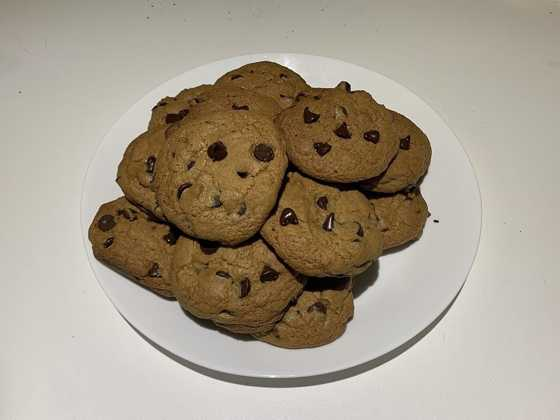
メニュー
価格・そのほかのメニューは準備中です。営業時間・定休日も準備中(掲載の準備ができ次第、お店の言葉で更新できます)。
写真はフリー素材のイメージで、実際の商品ではありません。
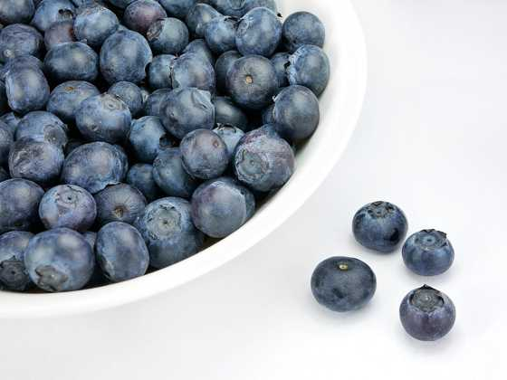
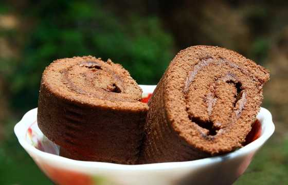
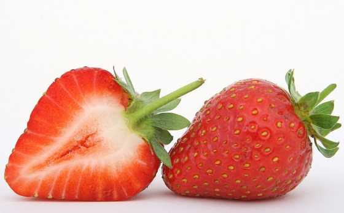
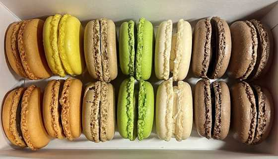
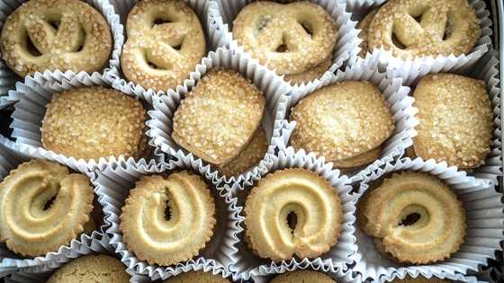
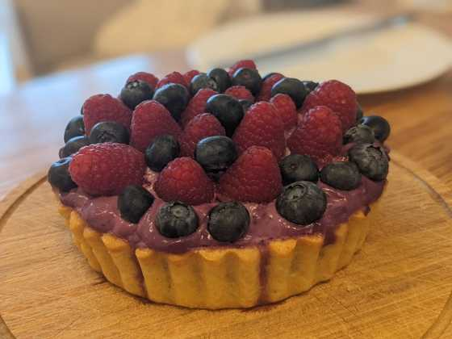
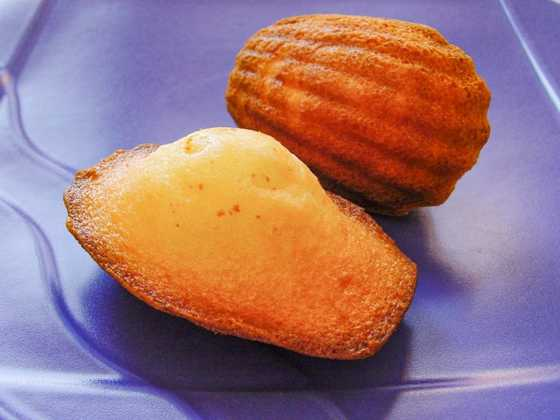
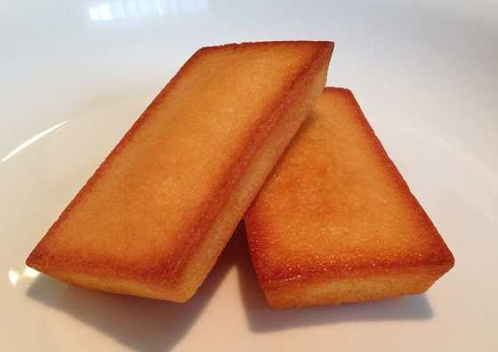
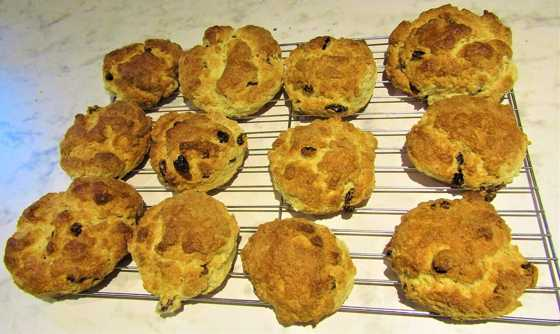
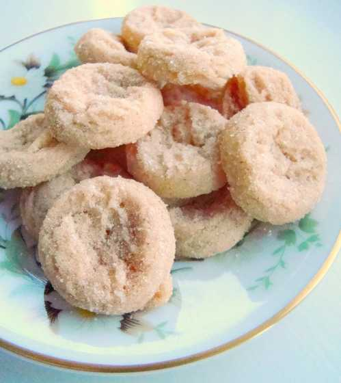
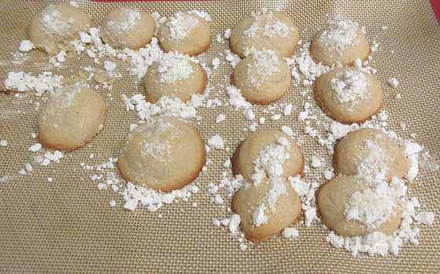

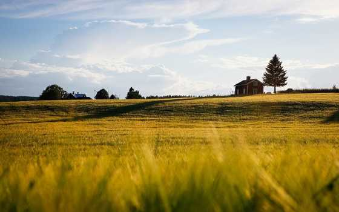
口コミ イメージ例
あつあつのワッフルに、いちごソースがよく合いました。家で食べるようなほっとする味です。
ホットサンドの名前にくすっと笑いました。お昼にテイクアウトして、公園で食べました。
スムージーがやさしい甘さで、おやつの時間にぴったり。また寄りたいです。
口コミは制作側が作ったイメージ例で、実在の声ではありません。
お店のこと
川原のおやつ屋さん グッテは、2025年に青森県黒石市にオープンしたおやつ屋さんです。メニューは「家庭の味」を原点にしていて、手に取りやすい価格で、学生から子育て世代まで幅広い方に親しまれていると紹介されています。
定休日にはワークショップなどのイベントが開かれることもあり、店主のあたたかい人柄に惹かれて人が集まる、交流の場にもなっているそうです。駐車場もあります。
店名の「グッテ」の由来は確認できていません。制作側のイメージとして、このページでは「おやつを食べよう」という呼びかけのような親しみやすさを、色づかいとことば選びに映しました。
紹介内容は公開されている紹介記事(hapipo)などにもとづきます。公式サイトは見当たらず、Instagramが公式の発信先です。
アクセス
- 店名
- 川原のおやつ屋さん グッテ
- 住所
- 日本、〒036-0355 青森県黒石市袋井３丁目４３−２
- 電話
- 準備中
- 営業時間
- 準備中
- 定休日
- 準備中
- @kawarano_oyatuyasan.gutte